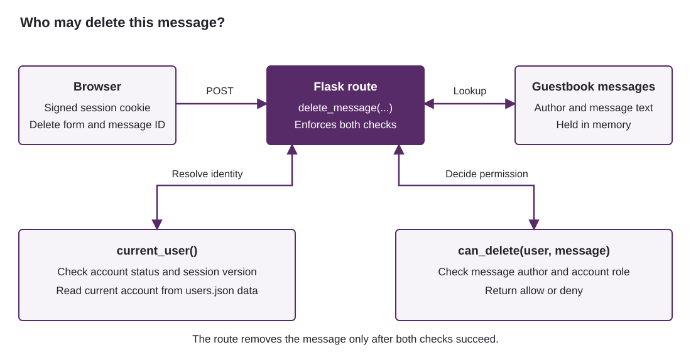

Requirements
- Python 3.10 or later, your usual editor and a browser.
- The Python packages
Flask,argon2-cffiandFlask-WTF. - Your lecture notes and somewhere to record short answers.
Create an empty project folder. All code and practice data are on this page; create your own Python files as you work. Install the packages through your editor or run this command using the project's Python interpreter:
python -m pip install Flask argon2-cffi Flask-WTFFlask serves the application, argon2-cffi provides password hashing, and Flask-WTF supplies the form protection already included in the example. Allow five minutes for setup, 20 minutes each for Parts 1 and 2, 65 minutes for Part 3, and ten minutes for Part 4.
Use invented credentials. The application runs at 127.0.0.1 on your own machine, with debugging disabled. Its people and messages are teaching examples. Work individually or in pairs and keep your own code and notes.
1. Entropy and guessing
About 20 minutes. Lecture slides 26-30.
A six-digit PIN has a million possible values, including those beginning with zero. That does not mean that a person chooses each value with the same probability. We will compare a random generator with a distribution in which a few PINs are especially popular.
Uniform choices
If each of \(L\) positions is chosen independently and uniformly from \(N\) possibilities, the search space \(S\) and Shannon entropy \(H\), in bits, are:
For example, three independent fair coin tosses have \(2^3=8\) outcomes and 3 bits of entropy. For a uniformly chosen secret, trying distinct candidates in any fixed order takes \((S+1)/2\) guesses on average.
| Generator | Choices per position, \(N\) | Positions, \(L\) |
|---|---|---|
| Random four-digit PIN | 10 | 4 |
| Random six-digit PIN | 10 | 6 |
| Random password using a-z and 0-9 | 36 | 10 |
| Four independent random words, with repetition allowed | 2,048 words | 4 words |
Unequal choices and min-entropy
Min-entropy describes the probability of the attacker's best single guess. If \(X\) is the chosen secret and \(p_{\max}\) is the probability of its most likely value, then:
For a uniform distribution, min-entropy and Shannon entropy both equal \(\log_2 S\). They need not agree when some choices are more likely than others. Min-entropy alone does not give the average number of guesses needed to recover a secret. [1]
| PIN | Count | Probability for this exercise |
|---|---|---|
1234 | 40 | 0.40 |
0000 | 20 | 0.20 |
1111 | 15 | 0.15 |
2580 | 15 | 0.15 |
1212 | 10 | 0.10 |
Treat these frequencies as the assumed distribution for the exercise: \(p(x)=\text{count}(x)/100\). They are not measurements of real PIN use. A small survey would not establish the probabilities for an entire population.
Create entropy.py using this outline. Python's math.log2 gives a base-2 logarithm, and counts.values() gives the values in a dictionary.
import math
schemes = [
("Four-digit PIN", 10, 4),
("Six-digit PIN", 10, 6),
("Ten characters from a-z and 0-9", 36, 10),
("Four words from a list of 2048", 2048, 4),
]
pin_counts = {"1234": 40, "0000": 20, "1111": 15, "2580": 15, "1212": 10}
def entropy_bits(choices, length):
# TODO: return the entropy of this uniform, independent generator.
raise NotImplementedError
def min_entropy(counts):
# TODO: use the largest relative frequency.
raise NotImplementedError
for name, choices, length in schemes:
print(name, choices ** length, entropy_bits(choices, length))
print("PIN min-entropy:", min_entropy(pin_counts))Exercise: calculate and interpret
- Complete both functions and run the program. Compare the four uniform generators. For the invented PIN distribution, calculate the best single-guess success probability and the fraction covered by the three most likely guesses.
- Compare its min-entropy with that of a uniform four-digit PIN. Why would assigning
Durham2026!entropy from its length and character set make an unjustified assumption about how it was chosen?
A large space of possible passwords is useful only if the selection process makes it hard to predict which possibilities people will choose. The next task exploits predictable choices without searching the entire space.
2. A dictionary attack on a password hash
About 20 minutes. Lecture slides 19 and 21-30.
A dictionary attack tries likely passwords, including variations on words. It differs from an exhaustive search through every possible string. In this exercise, an attacker has obtained one encoded Argon2id hash and can test guesses locally.
Argon2id makes a guess consume time and memory. Its encoded record includes the salt and cost parameters, so a verifier can use those settings again. A fresh salt prevents identical passwords from producing identical stored records; it does not make a weak password unguessable. [2]
The PasswordHasher library supplies two operations we need: hash(password) creates an encoded record, and verify(encoded, guess) checks a candidate against it. Verification returns True on a match and raises VerifyMismatchError otherwise. Catch that exception to continue to the next guess. [3]
Create dictionary_attack.py from the outline below. The target was generated specifically for this practical. The small candidate list is included in the code.
from time import perf_counter
from argon2 import PasswordHasher
from argon2.exceptions import VerifyMismatchError
hasher = PasswordHasher()
target = "$argon2id$v=19$m=65536,t=3,p=4$t5oZT5yx6tvbxTJpBgkGcA$OP0ATd4cRE5VmIbPjA0NGlC4jXQTIydfVxqMAaU4m6w"
candidates = [
"password", "letmein", "welcome", "harbour21",
"harbour2026", "Harbour2026!", "correct horse battery staple",
]
def find_password(encoded, guesses):
# TODO: test guesses in order; return the first match, or None.
raise NotImplementedError
start = perf_counter()
found = find_password(target, candidates)
elapsed = perf_counter() - start
print("Result:", found)
print(f"Elapsed: {elapsed:.3f} seconds")Exercise: recover the practice password
- Complete
find_password. Try the candidates in order, return the first match, and returnNoneif none matches. Print the number of guesses as well as the elapsed time. - Remove the matching candidate and run the program again. What does an unsuccessful search tell you about the password? Would an online login limit stop this offline loop?
- Hash the recovered password twice with
hasher.hash. Compare the strings, then useverifyon each. Explain why comparing a freshly generated hash string with the target is not a valid password check.
Your timing describes this run, on this machine, with this Argon2 configuration. Do not treat it as a universal cracking rate. A slow hash increases the cost of each guess; it does not increase the entropy of the password. [5]
3. Build a Flask application
About 65 minutes. Lecture slides 8, 11-12, 49-53 and 62-71.
You will build a guestbook for a small walking society. After signing in, a member sees the messages left by everyone else and a form for posting a short message of their own. Each message shows its author and has a Delete button.
What the finished application should do
There are three accounts: Alice and Bob are ordinary members; Carol is the moderator. All three can read the guestbook and post messages. Carol's extra permission is that she can remove someone else's message, for example if it contains spam.
- A visitor who has not logged in cannot read, post or delete messages.
- A member can delete their own messages, but cannot delete another person's.
- A moderator can delete any message.
- Inactive accounts and unrecognised roles are refused access.
For example, Bob can read Alice's message and add a reply, but he cannot delete Alice's message. Carol can delete either person's message. Logging in establishes who is making the request; the deletion check decides whether they may change that particular message.
The page and the code for adding messages are supplied. Your work is to complete four gaps: hash a password, verify a password, decide who may delete a message, and enforce that decision. There is no registration form or database design to implement.
The guestbook starts with one message from Alice and one from Bob. Messages are kept in memory and reset to those examples whenever you restart the application. Account records are saved in users.json. This makes it easy to repeat a test without setting up a database.
How Flask handles a request
A route connects a URL to a Python function. For example, @app.route("/login") tells Flask which function handles that address. A GET request normally asks for a page; a form uses POST to send its fields. request.form contains those fields, and redirect sends the browser to another URL. [12]


3.1 Create the application
Create app.py and copy the following application into it. Do not call the file flask.py, as that would hide the installed package. Work through the four marked gaps in the order below; the other code is supplied so that you can concentrate on the security checks.
Application outline for app.py
"""Local guestbook. Complete the four TODOs shown on the page."""
import getpass
import json
import secrets
import sys
from datetime import timedelta
from pathlib import Path
from argon2 import PasswordHasher
from argon2.exceptions import VerifyMismatchError
from flask import Flask, abort, redirect, render_template_string, request, session
from flask_wtf.csrf import CSRFProtect
app = Flask(__name__)
app.config.update(
SECRET_KEY=secrets.token_hex(32),
SESSION_COOKIE_HTTPONLY=True,
SESSION_COOKIE_SAMESITE="Lax",
PERMANENT_SESSION_LIFETIME=timedelta(minutes=30),
)
CSRFProtect(app)
hasher = PasswordHasher()
database = Path(__file__).with_name("users.json")
users = json.loads(database.read_text()) if database.exists() else {}
# An unknown username still takes a password-verification operation.
dummy_hash = hasher.hash(secrets.token_urlsafe(32))
# Messages reset to these examples when the application restarts.
messages = {
1: {"author": "alice", "text": "Thanks for organising the walk!"},
2: {"author": "bob", "text": "Shall we meet at ten next Saturday?"},
}
def save_users():
temporary = database.with_suffix(".tmp")
temporary.write_text(json.dumps(users, indent=2), encoding="utf-8")
temporary.replace(database)
def make_hash(password):
# TODO 1: return the library's complete encoded Argon2id hash.
raise NotImplementedError("Complete make_hash before initialising accounts")
def password_matches(encoded, password):
# TODO 2: verify the password; return False for VerifyMismatchError.
return False
def can_delete(user, message):
# TODO 3: implement the deletion policy, returning True or False.
return False
def current_user():
user = users.get(session.get("username"))
if user and user["active"] and session.get("version") == user["version"]:
return user
return None
LOGIN = """
<!doctype html><title>Society guestbook</title>
<h1>Log in to the guestbook</h1>
<p>{{ error }}</p>
<form method="post">
<input type="hidden" name="csrf_token" value="{{ csrf_token() }}">
<p><label>Username <input name="username" required></label></p>
<p><label>Password <input name="password" type="password" required></label></p>
<button>Log in</button>
</form>
"""
HOME = """
<!doctype html><title>Society guestbook</title>
<h1>Society guestbook</h1>
<p>Signed in as {{ user["id"] }} ({{ user["role"] }})</p>
{% for number, message in messages.items() %}
<article>
<p>{{ message["text"] }}</p>
<p>By {{ message["author"] }} (message {{ number }})</p>
<form method="post" action="/delete/{{ number }}">
<input type="hidden" name="csrf_token" value="{{ csrf_token() }}">
<button>Delete message {{ number }}</button>
</form>
</article>
{% endfor %}
<h2>Leave a message</h2>
<form method="post" action="/add">
<input type="hidden" name="csrf_token" value="{{ csrf_token() }}">
<p><label>Message <textarea name="text" maxlength="300" required></textarea></label></p>
<button>Post message</button>
</form>
<form method="post" action="/logout">
<input type="hidden" name="csrf_token" value="{{ csrf_token() }}">
<button>Log out</button>
</form>
"""
@app.route("/login", methods=["GET", "POST"])
def login():
error = ""
if request.method == "POST":
username = request.form.get("username", "")
password = request.form.get("password", "")
user = users.get(username)
encoded = user["password_hash"] if user else dummy_hash
matched = password_matches(encoded, password)
if matched and user and user["active"]:
if hasher.check_needs_rehash(encoded):
user["password_hash"] = hasher.hash(password)
save_users()
session.clear()
session["username"] = username
session["version"] = user["version"]
session.permanent = True
return redirect("/")
error = "Login failed."
return render_template_string(LOGIN, error=error)
@app.route("/")
def home():
user = current_user()
if user is None:
return redirect("/login")
if user["role"] not in ("member", "moderator"):
abort(403)
return render_template_string(HOME, user=user, messages=messages)
@app.route("/add", methods=["POST"])
def add_message():
user = current_user()
if user is None:
return redirect("/login")
if user["role"] not in ("member", "moderator"):
abort(403)
text = request.form.get("text", "").strip()
if not 1 <= len(text) <= 300:
abort(400)
number = max(messages, default=0) + 1
messages[number] = {"author": user["id"], "text": text}
return redirect("/")
@app.route("/delete/<int:message_id>", methods=["POST"])
def delete_message(message_id):
user = current_user()
if user is None:
return redirect("/login")
message = messages.get(message_id)
if message is None:
abort(404)
# TODO 4: replace unconditional refusal with a call to can_delete.
abort(403)
del messages[message_id]
return redirect("/")
@app.route("/logout", methods=["POST"])
def logout():
user = current_user()
if user:
# Old cookies for this account now carry the wrong version.
user["version"] += 1
save_users()
session.clear()
return redirect("/login")
@app.after_request
def prevent_cached_pages(response):
response.headers["Cache-Control"] = "no-store"
return response
def initialise_accounts():
if database.exists():
raise SystemExit("users.json already exists; no accounts were overwritten.")
for username, role in [("alice", "member"), ("bob", "member"), ("carol", "moderator")]:
password = getpass.getpass(f"Choose an invented password for {username}: ")
users[username] = {
"id": username, "role": role,
"active": True, "version": 0, "password_hash": make_hash(password),
}
save_users()
print("Created users.json. Now run: python app.py")
if __name__ == "__main__":
if sys.argv[1:] == ["init"]:
initialise_accounts()
else:
app.run(host="127.0.0.1", port=5000, debug=False, threaded=False)The HTML strings are templates. Expressions such as {{ user["id"] }} are filled in by Flask, which escapes the inserted text. Keeping these small templates in the Python file avoids creating separate HTML files.
The hidden csrf_token fields and CSRFProtect belong to Flask-WTF. They protect form submissions against cross-site request forgery. Leave that supplied code in place while you work on authentication and authorisation. [13]
Exercise: create the accounts
- Complete
make_hashusing the Argon2 operation from Part 2. Runpython app.py initin your project terminal and choose invented passwords for Alice, Bob and Carol. - Inspect the generated
users.json. Identify the username, role and encoded hash. Check that your passwords are not stored as plaintext. Keep this file in your project, outside any public web directory.
Initialisation refuses to overwrite existing accounts. The program reads users.json when it starts. To test a deliberate change to an account's role or active flag in that file, stop the application, make the change and restart it.
3.2 Check the password and establish a session
Complete password_matches using hasher.verify. Return False for a mismatch. The supplied login route uses your result, checks the account is active, and records the username and account version in the session only after successful authentication.
The same route checks whether a successfully verified hash needs new parameters and saves a replacement when required. Read the short Argon2 password-hashing guide if you need to follow that part. A failed login must never replace a stored password hash. [4]
python app.pyOpen http://127.0.0.1:5000/. Leave the terminal running while you use the browser. Stop it with Ctrl+C; save your edits and start it again when changing the code. If port 5000 is in use, change the final line to use 5001 and open that port instead.
Exercise: test login
- Try Alice's correct password, an incorrect password and an unknown username. Log out between tests. Only the correct credentials should open the guestbook. The error message should not distinguish an unknown username from a wrong password.
- Log in as Alice and post a short message. Check that it appears under her name. In
add_message, find where the author is chosen. Why should this come from the logged-in account rather than a name typed into the form? - Use your browser's developer tools to find the
sessioncookie under Application or Storage. Why does the browser need this after the password has been checked? Why should the password itself never go in it?
Flask's default session cookie is signed, not encrypted: its contents are not a place for secrets. This application stores an identity and a version there, then obtains the current role from the server's account data. The key is generated at startup for this local exercise, so restarting the application signs everyone out. [14]
3.3 Decide who may delete a message
Use the guestbook rules at the start of Part 3 to complete the table. Reading a message does not imply permission to delete it.
| Account | Delete Alice's message | Delete Bob's message |
|---|---|---|
| Alice: member | Allow | Deny |
| Bob: member | Complete | Complete |
| Carol: moderator | Complete | Complete |
can_delete(user, message) receives two dictionaries. Use user["id"], user["role"], user["active"] and message["author"] to make the decision. Return False if the user is None, inactive or has an unrecognised role.
Exercise: implement and enforce the policy
- Complete
can_delete. It should return a Boolean decision without changing the guestbook. Check your conditions against each row of the table. - In
delete_message, replace the unconditionalabort(403)with a call to your function. Refuse a denied request before thedelstatement runs. Take the account's role from its server-side record.
3.4 Test the checks through the browser
For this exercise, every message has a Delete button, including messages you are not allowed to remove. This lets you test the server's refusal. abort(403) produces a Forbidden response; abort(404) means the message was not found. See the HTTP status-code list if you need a reminder.
Exercise: test the guestbook rules
- As Alice, try to delete Bob's message before deleting her own. The first attempt should return 403 and leave Bob's message intact; the second should remove Alice's message. Return to the guestbook after a refusal.
- Restart the application to restore the two example messages, then log in as Bob and check his row. Restart once more and check that Carol can delete both messages.
- Log out and reload the guestbook. You should return to the login form. Open a private browser window and check that it also requires a login.
The Delete form makes a POST request to /delete/message_id. Typing that address into the browser makes a GET request, which this route does not accept. A real interface could hide buttons that a user cannot use, but the server must still check every deletion request. In your coursework explanations, distinguish the permission rule from the code that enforces it. [6]
4. Review your application
About ten minutes. Lecture slides 11-12, 19-20 and 69-71.
Trace one successful deletion from the browser to the change in the guestbook. The cookie identifies a session, current_user checks the account, and can_delete decides whether that account may remove the chosen message.
Exercise: explain what your checks achieve
- Compare Part 2's offline attack with guessing passwords through
/login. Which could be slowed by a server-side attempt limit? Which is affected by the Argon2 cost parameters? - Read
logoutand the version comparison incurrent_user. Explain why a copied old cookie stops working after logout. What happens to another browser already logged in to the same account? - Suppose Alice changed the message number in a deletion request or added
role=moderatorto its form data. Explain why neither should let her delete Bob's message. Which values does your check trust, and where do they come from?
Relating it to an incident
The 2023 23andMe breach involved login details stolen from other sites, with information also exposed through connections to compromised accounts. This was credential stuffing, rather than evidence that the attackers first cracked 23andMe's stored hashes. Explain why correct Argon2 storage alone would not stop someone who already knew a reused password. [8] [9]
The local application demonstrates hashing, authentication and access checks. It has no online attempt limit or MFA. Its JSON store and per-process signing key are teaching simplifications. A deployed service needs suitable persistent storage, managed signing keys, HTTPS and secure cookies, along with recovery and monitoring. [7] [15]
Further Research
After the class, use one of the following to practise a different part of the lecture.
- Mandatory access control. Write a second policy function using Bell-LaPadula. Represent a label as a level and a set of compartments. Label \(A\) dominates \(B\) when its level is at least as high and its compartments include all of \(B\)'s. Permit reading when the subject dominates the object, and writing when the object dominates the subject. Use a fixed current subject label and exclude trusted declassification. Test equal labels, different levels and incomparable compartment sets. See slides 58-61.
- Biometric thresholds. Write a function that takes genuine-user scores, impostor scores and a threshold, accepting scores at or above the threshold. Return the false rejection and false acceptance rates using the correct denominator for each. Try several thresholds with invented, overlapping score lists. Explain why these toy results do not measure the security of a real biometric system. See slides 14-17 and 38-39.
Sources and useful references
The slide numbers refer to the supplied Authentication, Authorisation and Access Control lecture. Read the short Argon2 guide during Parts 2 and 3; the other links are references for particular questions.
- NIST: min-entropy. Definition in terms of the most probable outcome.
- OWASP: Password Storage. Salts, work factors and Argon2id.
- argon2-cffi: API reference.
PasswordHasher, verification exceptions and parameter checks. - argon2-cffi: How to Hash a Password. The short guide used in Part 2.
- argon2-cffi: Choosing Parameters. Selecting and measuring costs for a deployment.
- OWASP: Authorization. Default denial and checking every request.
- OWASP: Session Management. Expiry, logout and invalidation.
- ICO: findings on the 23andMe breach, 17 June 2025.
- Canadian and UK regulators: joint investigation, 20 June 2025. Paragraphs 27-31 explain the wider exposure.
- W3C: Web Authentication. Relying-party scope and origin checks.
- FIDO Alliance: passkeys. Device storage, synchronisation and authentication.
- Flask: Quickstart. Routes, request data and templates.
- Flask-WTF: CSRF Protection. The supplied form protection.
- Flask: Sessions. Signed cookie sessions.
- Flask: Security Considerations. Cookie settings and deployment concerns.